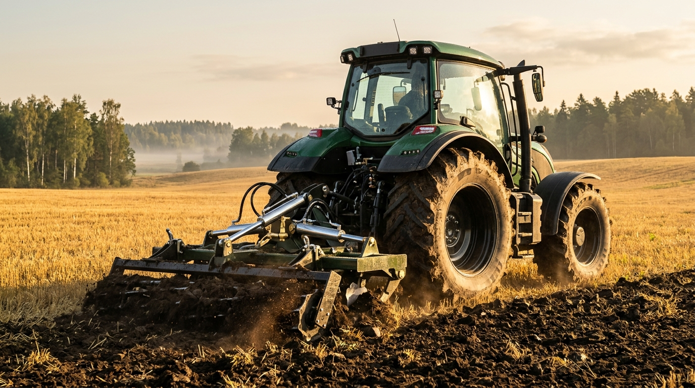
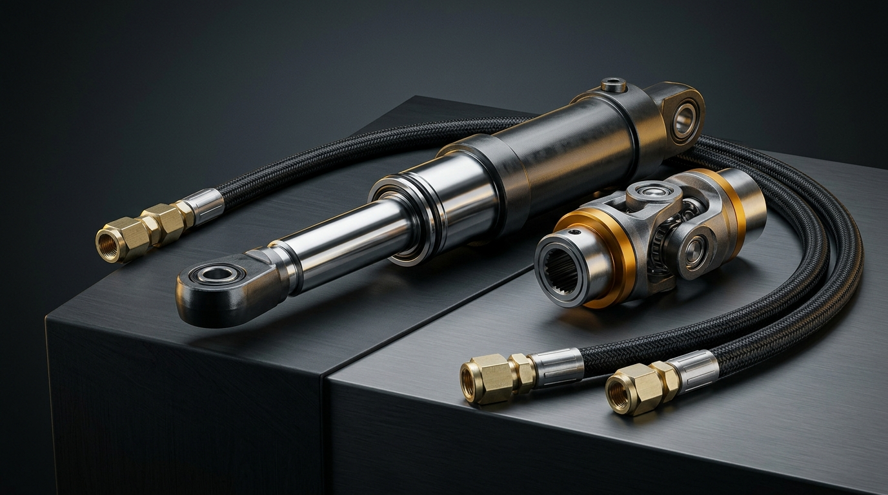
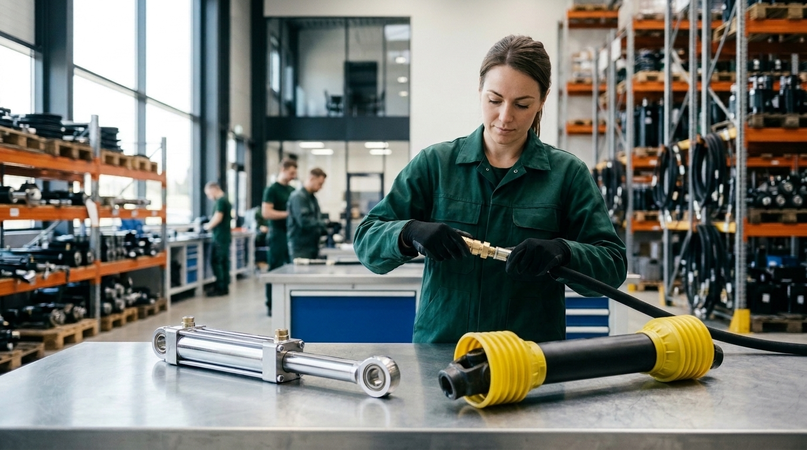

Nuotrauka A
Traktorius su hidrauliniu padargu darbe
Gyvas, reklaminės kokybės žemės ūkio technikos kadras rytinėje šviesoje su aiškiai matomais hidrocilindrais ir žarnomis.
Pritaikyti visi 4 jūsų pakeitimai + papildomi pagrindinės nuotraukos ir vektorinių logotipų (.SVG) variantai išsirinkti.
Išsirinkite, kuri nuotrauka geriausiai reprezentuoja jūsų veiklą — akimirksniu įdėsime ją į galutinę svetainę.

Gyvas, reklaminės kokybės žemės ūkio technikos kadras rytinėje šviesoje su aiškiai matomais hidrocilindrais ir žarnomis.

Chromuotas hidrocilindras, tiksliai frezuota plieno–aukso kardano kryžmė ir aukšto slėgio žarnos su žalvariniais antgaliais ant tamsaus plieno.

Šviesi, pasitikėjimą kurianti dirbtuvių ir sandėlio nuotrauka: aukšto slėgio žarnų jungimas prie darbastalio su hidrocilindru ir kardanu.
Neribotos kokybės vektoriniai failai (tinka svetainei, spaudai, vizitinėms, Facebook ir favicon).
Geometrinis žalias–auksinis „S“ simbolis su dviem šlifuoto aukso plokštelėmis ir užrašu „Scan Technika“.
Tas pats žalias–auksinis „S“ simbolis be sunkaus fono — idealiai atrodo šviesioje svetainės antraštėje ir telefone.
Atskiras „S“ ženklas naršyklės skirtukui (favicon), socialinių tinklų profiliui ir antspaudams.